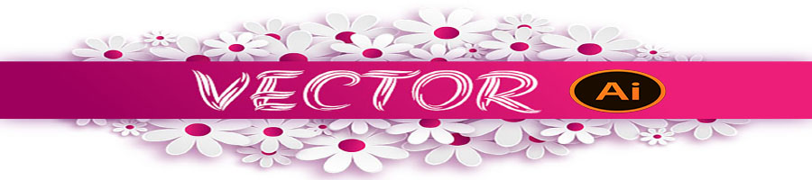
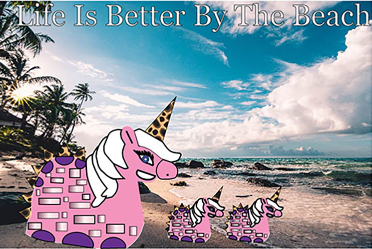

<!doctype html>


<html>

</html>
<head>
     <title>CINTHYA NUNEZ</title>
    

    <link rel="stylesheet" href="css/nunez%20cinthya_webfinal.css"> 
    
</head>
<body>
    <div class="container">
    
        
        
        <header></header>     
        


  <p>My vector project was a creature that is part turtle and part unicorn. My inspiration for this project was the beach and animals.I enjoy going to the beach since I can remember.I decided to have the beach as my background for this project.I also love having animals around me and for this project we had to make a creature.I decided to combine a turtle and a unicorn together and i created my creature. I gave the creature pastel colors and circles,rectangles and triangles shapesThe challenges for me with project  was grouping elements together. </p>

    

        <a href="index.html">Home</a>|
    
    <a href="photoshop.html">Photoshop</a>|
    
    <a href="Vector.html">Vector</a>|
    
    <a href="Time%20Based%20Media.html">Time Based Media</a>|
    
        
       <a href="Print.html">Print</a>| 
        
    <a href="Contact.html">Contact<a>|
   
        
    
        </div>
  
</body> 